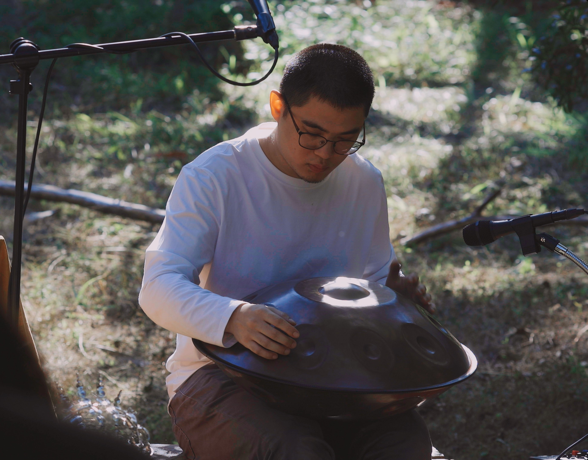

Jaw Harp · 竹製口簧
口中的宇宙
口中的宇宙
一簧的千音
口簧琴是人類最古老的共鳴樂器之一，遍佈全球不同文化 — 台灣泰雅族、阿美族的竹製口簧、西伯利亞的 Khomus、越南的 Đàn môi。演奏者以口腔為共鳴腔，透過呼吸、舌位與嘴型的微調，從單一簧片奏出豐富的泛音層次。
每一次撥動，簧片的振動穿透顱骨，直接被身體聆聽。在共振公式的儀式中，口簧琴如細語、如星塵，為音景注入古老部落的靈性頻率。

口簧琴的泛音在口腔中共鳴成宇宙的低語，手碟的金屬振動如水波般擴散
兩者交織成大地與天空之間的對話
口簧琴是人類最古老的共鳴樂器之一，遍佈全球不同文化 — 台灣泰雅族、阿美族的竹製口簧、西伯利亞的 Khomus、越南的 Đàn môi。演奏者以口腔為共鳴腔，透過呼吸、舌位與嘴型的微調，從單一簧片奏出豐富的泛音層次。
每一次撥動，簧片的振動穿透顱骨，直接被身體聆聽。在共振公式的儀式中，口簧琴如細語、如星塵，為音景注入古老部落的靈性頻率。
手碟誕生於 2000 年的瑞士伯恩，由兩片半球形金屬熔接而成 — 頂端圍繞中央「ding」的數個音階凹陷，依次被敲擊便流出如水晶般通透的音響。它的聲音兼具打擊樂的節拍與旋律樂器的音高。
手碟的泛音豐富而綿長，每一次輕撫都像將聲波投入靜水 — 圓形漣漪層層向外擴散。在共振公式的儀式中，它承載節奏、也承載空靈，是連接身體律動與意識漂浮的橋樑。

一簧在口，千音在心
水波漣漪處，天地開始對話